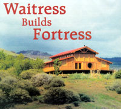
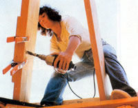
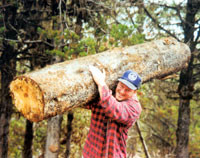
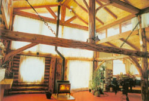
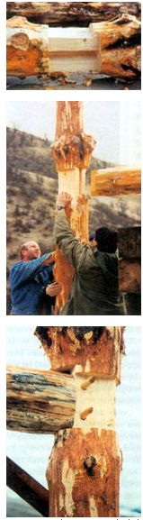
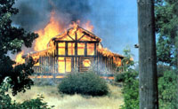
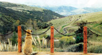

I wanted a big log house. Nevermind that I had no building experience, no fat bank account and no helpmate. What I did have was a piece of land, an old pickup truck and a high threshold for pain.
My long-smoldering desire for a rustic home had ignited into passion when I turned 40-"Ripeness is all," Shakespeare wrote. I moved to Ashland, Ore., found an affordable piece of land and secured financing. With a federal loan, I bought 10 acres for $40,000 at 6.5 percent interest. The property had two outbuildings that I remodeled into storage and temporary living space. Now, I just had to come up with a practical plan for my dream home on my waitress's frayed-shoestring budget. Vertical-log construction was the practical choice for a 125-pound woman with a strong back and a sturdy chain saw.
With a pole permit from the U.S. Forest Service, logs were available for only 3 cents a foot, and I could get them just 20 miles away. Short logs would fit in my pickup; they would require minimal notching, so the walls would go up fast. Shrinkage in length is negligible, so settling wouldn't be a problem. Besides, Davy Crockett was my great-great-great-great uncle, and that's how he did it. Forts back then were erected in a day, stockade style. Why not now?
Brimming with enthusiasm and newfound confidence, I forged ahead with tunnel vision. To the drawing board, in and out of the forest, and back and forth to work I went. Like a squirrel, preoccupied with survival and security, I was oblivious to anything but "acorns."
Until I met Kirt. Somewhere between doing sit-ups at the fitness center and serving two eggs over-greasy at the restaurant, I fell in love.
Kirt was quiet and good-natured, and had the most satisfying shoulders I'd ever seen-not to mention arms and legs like tree trunks. Hercules! He also had blonde curls, blue eyes, sparkling teeth and a dimple in his chin. (Excuse me while I faint.) Nevermind that he was half my age. We adored each other, and time stood still.
The year we met, 1989, was spent giggling like children at recess while stockpiling 300 logs from the forest. A conventional courtship it was not. Gossipers called us Jock and Jill. I called us lucky. If this rough-hewn figure in a flannel shirt and Levi's wasn't the marryin' man, he certainly was the carryin' man! (See photo, Page 30.)
Kirt was wise beyond his years, and authentic. He respected my wishes and nurtured my dreams. Equality was a given. Our similarities far outweighed our differences-the age gap didn't matter. Just out of college, he was pursuing his own goals, but was unobtrusively there if I needed him.
I designed the house-structure, form and content. First of all, it wouldn't be too "precious" to live in or live it up in; I wanted dogs and cats. It would be spacious, well-lit and functional. Simplicity and natural aesthetic would prevail, with plenty of room to get fancy in the finishing touches.
Commensurate with my level of craftsmanship, I needed a straightforward, hilltop design, like a Panama hat, to direct the winds up and over. I opted for the unpretentious grace of a lofty gabled barn with sweeping shed wings. (If a tornado hits, I'll see you in Kansas!)
I constructed a scale model to get the feel of my plans. From years of forethought and soul-searching, I knew exactly what I wanted, but how was a bothersome technicality. With waitressing tips from the cafe, I'd pay as I go, and go 'til I dropped. Labor cost time, but energy was my renewable resource. Except for big-ticket items like appliances, fixtures and a woodburning stove, I would make everything from scratch, including deep windowsills and cedar frames for the glass. Planning ahead was essential.
Inside, ambient light would stream through a bank of large south-facing windows. At eye level, the spectacular views of snow-capped mountains by day and city lights at night would be given their proper status. Never to take my views for granted, I would settle for nothing less than a round portrait window to gaze out of for visual refreshment.
French doors would open out onto a huge front deck with steps leading down to a wood-fired hot tub.
On the north side of my model, I pretended to be up in the loft with its knotty pine walls, a huge bed and a river-rock shower. My imagination slid down the fireman's pole into the den below. Every home needs a hermetically sealed enclave, where one can escape the capricious distractions of life. My cave, with its porthole window and hobbit door, would be my place to run away to without leaving home. I would cherish my time to read, listen to music and watch the Discovery Channel.
An easterly kitchen would be the bright spot in the morning, and the first rays of sunrise would meet me for coffee in the breakfast nook. One of my life's most profoundly simple pleasures is to sip coffee and contemplate the universe.
When I designed the house, I gave myself permission to satisfy-not deny-my eccentricities. So what if the building inspector raises one eyebrow when he signs the checklist-just as long as I'm legal. I also wanted low-maintenance housekeeping. Let moss grow on the river rocks in the shower. Lichens and mushrooms are charming!
I love to cook, but not within the confines of a cramped kitchen. The kitchen is where my personality takes up a lot of space. Give me a massive butcher block and a cleaver, and I'll get serious about dinner. Fresh vegetables are a must and so is a big sink for washing them. I want to throw spinach in the built-in "pond" and let the silt fall several feet to the bottom.
The dining-room table is the most popular place in any home. Everything happens there. Mine would be a colossal 4 by 8 feet and made with planks thick enough to support hungry relatives in a feeding frenzy.
Doors are symbolic. As a shelter defines our living spaces and controls the atmosphere, a door determines who enters that private realm of being. I wanted a front door that would break Hitler's toe if he tried to kick it in! Massive and medieval, it must creak with hand-forged hinges and black hardware.
Each kind of door has its own character. The quaint Dutch door in a country kitchen will cool an aromatic apple pie resting on the door's mantelpiece. A little cat door in the bottom will let Foo-foo bring a mouse in. Sophisticated French doors make a woman feel like a princess in gossamer, even when clad in blue jeans and a T-shirt. There's something about a large view chopped up into little pieces that makes it easier to take in. Smaller French doors in the loft would open onto a cantilevered deck, for sipping mint juleps in the cooler north light of a hot summer day.
Mandatory for decoration, mirrors are magic. They're a poor man's way to double the square footage and keep an eye on things. They repeat architectural patterns for visual appeal and keep you company when no one's home.
Yes, my humble abode would be my castle, and I reserve the right to keep the Internal Revenue Service out with a moat and drawbridge if necessary, or let the whole Mormon Tabernacle Choir in, if I so desire.
"I am giddy; expectation whirls me 'round." (Shakespeare again.) It was time to roll up my sleeves, flex my little biceps and grab the drawknife. I peeled and stained 150 forest service logs. My sister, Meredith, made the mistake of visiting for a week. She peeled and stained another 150 logs, and escaped by plane when her "vacation" was done.
The next step was squaring off the 600 log ends. Kirt and I worked together using a Rube Goldberg contraption I devised to ensure a straight cut. I built the floor in three months. It was supported by a pier-and-girder foundation, connected together by 2-by-12-inch floor joists on 16-inch centers. It would support a house full of hippos.
To tie it all together, this 2,000-squarefoot design incorporated mortise-and-tenon joints (see photos below). Yikes! Mortise and tenon joints! Could I really do this? There lay eight 300-pound 14-footers and four 400-pound 18-footers on the subfloor. And there I stood with a hammer and chisel. It was my moment of truth.
I laid each "bent" (two upright logs and a horizontal log) out as it would appear standing up, flattened the surfaces where the tenons would plug in and cut the mortises (slots) just so, using an electric chain saw, ship's auger and chisel. I cut a tenon on each end of the horizontal logs after taking great care to ensure a 90-degree junction. Everything had to be kept square with the imaginary centerline of each log. The four bents created three bays (space between bents), that were joined together by connecting girts (logs) and reinforced with knee braces.
All went well. Kirt helped me erect the framing members one at a time, fastening the vertical logs to the floor with 12-inch pole-barn spikes. Then we placed the 18-foot horizontal logs with a rented lift, slid the tenons into their respective mortises, and drove the woodfastening pegs home. Squealing with delight, we ran off for pizza and beer. It was Halloween, and our "skeleton" stood eerily in the moonlight.
For the next few days, Kirt manned the lift below while I hammered in rebar above (20 feet up on rented scaffolding). Nine-by-9-inch ridgepoles and rafter plates, perched atop their upright supports, swayed in the breeze.
Until each half-lap joint was secured with spikes we didn't feel safe; when we raised a beam, it raised our hair. Tension was high. Affectionate bickering now and then revealed a little cayenne pepper in our salad of love!
We stabilized the structure with 10 pairs of 4-by-10-inch rafters on 4-foot centers. They were joined together at a 6:12 roof pitch over the ridgepole and gusseted into place. At the overhang end, I predrilled holes and drove rebar into each rafter, down through the top plate and into a log. This method eliminated the need for a bird's mouth (a notch cut into a rafter so that it sits supported on the top plate).
Kirt was busy with his career, so now I was on my own, and I welcomed the challenge. For the next three months I worked on the roofs-all four of them. Because 2-by-6-inch tongue-and-groove pine sat on top of the rafters to create the vaulted ceilings, I had to build a grid on top of that roof to receive insulation, plywood, tar paper and metal. Every day was spent aardvarking around on my hands and knees, or limping back and forth with one foot higher than the other. Like a drunken sailor, even on solid ground I favored a gimp on my starboard side. Sometimes, to avoid the sun, I would work at night with a flashlight strapped to my forehead; I must have looked like a firefly. Mercilessly exposed to the elements, roofers are unsung heroes in the construction world.
I methodically put up the walls, one log at a time, and spiked them in place. To save my wrists for the cafe, I gripped the hammer with both hands and pounded away. I swapped the log ends alternately (big end up, big end down) to even out the taper and keep the walls plumb, and set each log 2 inches over the edge of the bottom plate, for a drip edge.
Next came the 36 windows and nine doors, to button up the place. I built the doors from tongue-and-groove pine and the window frames from cedar.
With only hand tools and a band saw, I had to call on friends Merle and Ivan (master craftsmen) to make the fancy cuts. Awning hardware opened rows of east and west windows for cross ventilation.
To save money, I picked up my huge order of double-paned glass in my old Ford pickup (four trips!) and summoned Kirt to help unload and lift the heavy windows into place. While he pressed the fixed panes (some of them 5 by 3 feet) against my prepared stops, I secured them all around with 2-by-2s. No cracks, no shards, no gaping wounds; that was reason enough to go out for a Chinese dinner!
Inside the house, the inner walls remained rustic with visible logs, but the walls sheltering me from the outside had to be insulated. I furred them out with 2-by-4s to receive fiberglass batts and sheetrock. I chinked between the logs on the outside. I hired an electrician to do the extensive wiring but painstakingly did the plumbing myself-and passed inspection.
Let there be light! -but not just any light. I suspended chandeliers from ceiling fans. To help support the one 18-foot horizontal log that freely spanned the middle of the house, I fashioned two hanging knee braces out of black chains and turnbuckles (see photo, Page 28).
I rented scaffolding again, but this time to caulk every crack and apply a beautiful protective stain to the entire house. Night and day, up and down the rungs and ladders I climbed, buttering the logs with my linseed-oil concoction until they glowed like the sunset. I wiped the baseboards with a tiny cotton T-shirt and laid it out to dry.
On June 29th, 1995, the T-shirt spontaneously combusted and burned the house down in two hours. I put the fire out with tears. After six years of building, I was back to square one.
I had nominal insurance to cover tools and a new foundation, but rebuilding would have to be done the hard way: all over again. Fortunately, being a waitress in a coffee shop meant I knew a multitude of people. They rallied together, threw a music benefit on my behalf and raised enough money to buy foundation beams, floor joists and rafters. Then Kitt and I headed into the forest with our trusty chain saw.
After we stockpiled and peeled 300 new logs, Kitt took a leave of absence from his job to help me rebuild the basic structure. It took two years. I continued to waitress and do the finish work by making doors, cutting and fitting curved knee-braces, creating a "tree" as a king-post, and building the stairway, railings and decks, which took an additional three years.
House No. 2 cost about the same as house No. 1 - $15 a square foot, for a total of $30,000. Now that I have my home, I've come to the conclusion that it is better to have built and rebuilt than never to have built at all!
|
 DOROTHY AINSWORTH Dorothy in action. The ledger board clamped to the rafter ensures a clean hole when the drill bit breaks through the other side of the rafter. |
 DOROTHY AINSWORTH Kirt Meyer carries an ""Oregon toothpick"" with relative ease. (Don't try this at home). |
 DOROTHY AINSWORTH In winter, the living room is full of light and heat, thanks to large windows and a woodstove. Cotton duck curtains help insulate but let light filter through. Note the hanging-chain knee braces. |
|
 DOROTHY AINSWORTH A mortise joint (top) fits together with a tenon joint (middle). They held together with pegs (above), which will be cut off flush. |
 DOROTHY AINSWORTH The saddest day of my life: 6,000 hours of labor and $30,000 in materials go up in flames. |
 ASHLAND DAILY TIDINGS/DENISE BARRATA Kembo the dog enjoys the view from the large circular deck of house No. 2. The completed ""fortress"" sits on 10 beautiful acres in rural Oregon. |
|
 DOROTHY AINSWORTH |
|
|